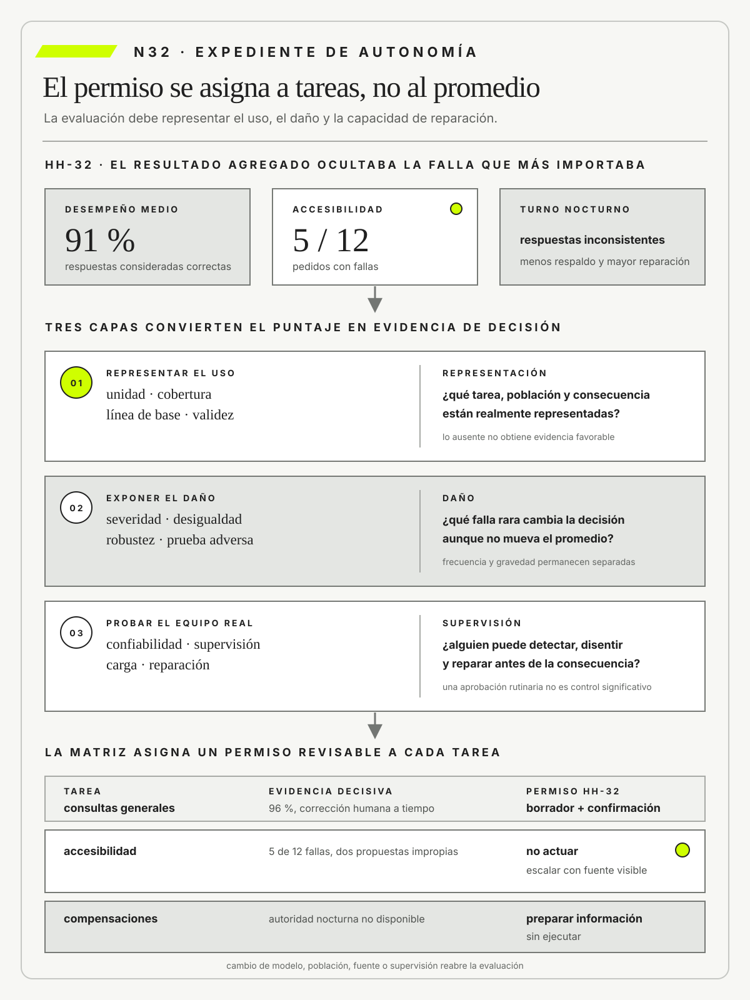

Evaluar tareas, cobertura, severidad, desigualdad, robustez y supervisión
N32
Un promedio de desempeño no autoriza autonomía.
METSI · N32
Contenido
Evaluar tareas, cobertura, severidad, desigualdad, robustez y supervisión
Ruta priorizada: 1 h 20 min a 1 h 40 min. Núcleo de lectura: 60 a 75 min; preparación: 20 a 25 min. Las extensiones agregan 30 a 45 min y profundizan el recorrido.
•Referentes SIN NUM.
01Pregunta profesional NÚCLEO
02El modelo acertaba nueve de cada diez veces y fallaba cuando más importaba NÚCLEO
03Hotel Horizonte: el promedio aprobaba un asistente que fallaba en la excepción NÚCLEO
04Tesis NÚCLEO
05Del cierre anterior al nuevo avance EXT.
06Movimiento 1 · Definir unidad, cobertura, línea de base y validez NÚCLEO
07Movimiento 2 · Desagregar desempeño y probar casos severos NÚCLEO
08Movimiento 3 · Evaluar el equipo y asignar autonomía reversible NÚCLEO
09Errores frecuentes EXT.
10Consecuencias profesionales EXT.
11Límites y tensiones EXT.
12De N32 a N33 EXT.
13Síntesis NÚCLEO
14Cinco píldoras para recordar EXT.
15Glosario esencial EXT.
16Preguntas de preparación NÚCLEO
•Referencias base SIN NUM.
Una lectura previa para llegar al encuentro con preguntas, evidencia y una decisión revisable.
Nota. SIN NUM. identifica aparatos de orientación y referencia.
METSI · FCE-UBA
Referentes
Seis referentes y las obras principales utilizadas para construir N32.
01
Joy Buolamwini
Gender Shades: Intersectional Accuracy Disparities in Commercial Gender ClassificationProceedings of Machine Learning Research · 2018
Demuestra cómo un buen resultado agregado puede ocultar fallas sistemáticas sobre poblaciones concretas.
02
Timnit Gebru
Gender Shades: Intersectional Accuracy Disparities in Commercial Gender ClassificationProceedings of Machine Learning Research · 2018
Vincula desempeño desagregado, documentación y distribución de consecuencias en sistemas de aprendizaje automático.
03
Helen Nissenbaum
Privacy in Context: Technology, Policy, and the Integrity of Social LifeStanford University Press · 2010
Aporta la integridad contextual para juzgar usos de información por actores, propósitos y normas de transmisión.
04
Ben Shneiderman
Human-Centered AIOxford University Press · 2022
Exige que la supervisión combine comprensión, intervención y registro, en lugar de limitarse a una aprobación nominal.
05
Cathy O’Neil
Weapons of Math DestructionCrown · 2016
Expone cómo modelos opacos pueden amplificar daño cuando escalan decisiones y reducen la posibilidad de cuestionarlas.
06
Inioluwa Deborah Raji
Closing the AI Accountability Gap: Defining an End-to-End Framework for Internal Algorithmic AuditingProceedings of the 2020 Conference on Fairness, Accountability, and Transparency · 2020
Propone auditorías internas que conectan alcance, evidencia, responsabilidad y cambios organizacionales.
N32 no resume estas fuentes ni las convierte en receta. Las pone en tensión para construir juicio profesional.
01METSI · N32 PROBLEMA
Pregunta profesional
¿Qué pruebas necesitamos antes de dejar que un sistema de IA actúe con más autonomía, sin esconder errores graves detrás de un buen promedio?
Una evaluación defendible representa tareas, poblaciones, severidad, robustez y capacidad real de reparación.
02METSI · N32 PROBLEMA
El modelo acertaba nueve de cada diez veces y fallaba cuando más importaba
Una red de salud evalúa un sistema que prioriza mensajes enviados por pacientes. El informe presenta 92 por ciento de coincidencia con la clasificación histórica y una reducción considerable del tiempo medio de lectura. Sobre esa base se propone que los mensajes de baja prioridad esperen hasta el día siguiente. Durante el piloto, dos consultas poco frecuentes vinculadas con embarazo y una reacción adversa quedan en esa cola.
El promedio era correcto, pero respondía una pregunta demasiado pobre. La muestra repetía la frecuencia histórica y casi no incluía casos graves, mensajes con errores ni situaciones donde alguien describía síntomas sin vocabulario clínico. Además, la clasificación histórica no era una verdad neutral. También reflejaba decisiones anteriores, recursos disponibles y desigualdades de acceso.
Una explicación culpa a la falta de datos. Otra señala que se está midiendo la unidad equivocada: se puntúa un mensaje aislado, aunque la tarea real incluye antecedentes, una conversación posterior y una decisión del equipo. Una tercera cuestiona que se use el mismo umbral para todas las personas. Cada explicación pide pruebas distintas y puede cambiar tanto la herramienta como la forma de supervisarla.
El equipo redefine la evaluación. La unidad pasa a ser un episodio completo, con entrada, contexto disponible, salida, revisión, acción y consecuencia. La cobertura se describe por propósito, severidad, forma de expresión, canal y población. La línea de base no es una persona ideal, sino el circuito vigente con sus demoras y errores. Así se puede preguntar si la herramienta mejora el sistema real o sólo supera un conjunto de respuestas descontextualizadas.
Los resultados se desagregan. Un error de redacción puede ser inocuo; una prioridad baja asignada a un caso urgente puede producir daño difícil de reparar. La evaluación pondera severidad, detectabilidad y posibilidad de intervención. También prueba robustez frente a abreviaturas, datos faltantes, cambios de distribución e instrucciones que intentan alterar el comportamiento. Ninguna cifra única resume esas tensiones sin pérdida.
La supervisión también se prueba. Durante una franja de alta demanda, las personas revisan tantas respuestas que empiezan a confirmarlas por rutina. El control existe en el procedimiento, pero no funciona si falta tiempo, información o autoridad para contradecir al sistema. El equipo reduce la autonomía, eleva ciertos casos mediante reglas claras y deja al modelo como apoyo. Cuando hay poca confianza o una consecuencia grave, una persona recibe prioridad y contexto.
La decisión de ampliar no se toma al alcanzar una exactitud general. Exige umbrales diferentes según daño, evidencia sobre poblaciones críticas, comparación con la ruta base y capacidad demostrada de detectar, detener y reparar. El piloto continúa en alcance limitado. Cada incidente y cada cambio de uso reabre la evaluación en vez de quedar absorbido por el promedio mensual.
N32 recibe de N31 una capacidad considerada pertinente y pregunta si la evidencia disponible justifica su alcance, autonomía y protecciones. Evaluar no es obtener una calificación para el modelo. Es construir un argumento revisable sobre el desempeño de un sistema sociotécnico bajo las condiciones y consecuencias que definen su uso.
03METSI · N32 PROBLEMA
Hotel Horizonte: el promedio aprobaba un asistente que fallaba en la excepción
HH-32 amplía la muestra utilizada en HH-31. El asistente resuelve correctamente el 91 % de las consultas y supera la línea de base en tiempo medio. Sin embargo, falla en cinco de doce pedidos vinculados con accesibilidad y formula respuestas inconsistentes durante el turno nocturno. Lucía Ferreyra muestra que esas fallas requieren más reparación que una consulta ordinaria. El promedio describe frecuencia, pero no severidad ni distribución del daño.
Hotel Horizonte conserva una misma escena para que cambie el análisis y no el caso.
«Noventa y uno por ciento parece suficiente», dijo Camila Duarte. Lucía respondió: «No si las fallas se concentran en pedidos de accesibilidad». Federico Müller preguntó: «¿Estamos midiendo una respuesta o una llegada completa?». Ricardo Sosa advirtió: «Y falta probar qué ocurre cuando el turno está cargado». La conversación cambia la evaluación. Ya no alcanza con contar aciertos; hay que mirar qué tarea se completa, quién queda expuesto y si una persona puede intervenir a tiempo.
El equipo define como unidad de evaluación una tarea completa con contexto, respuesta, acción propuesta y resultado. La muestra cubre canales, idiomas usados por huéspedes, horarios, tipos de reserva y casos adversos. Camila Duarte aporta consultas comerciales; Mariela Benítez construye casos donde una respuesta aparentemente correcta altera una habitación accesible; Federico Müller registra versión, configuración, latencia y herramientas habilitadas.
La comparación incluye la línea de base sin IA, desempeño desagregado, robustez ante datos incompletos y carga real de supervisión. Ricardo Sosa comprueba que revisar cada salida elimina la ventaja temporal. Elena Acosta rechaza ampliar autonomía: mantiene la generación asistida, prohíbe acciones sobre accesibilidad y exige escalamiento visible cuando falta evidencia. Una aprobación humana tardía o rutinaria no se presenta como control significativo.
La evaluación se reabrirá cuando cambien modelo, fuentes, permisos o población, y también ante una señal de desigualdad nueva. El umbral no se define sólo por exactitud, sino por costo de error, posibilidad de detección y reparación. HH-33 convertirá estas condiciones en gobierno vivo para evitar que una prueba aprobada continúe igual mientras el sistema cambia.
04METSI · N32 PROBLEMA
Tesis
Evaluar un sistema de IA exige mirar una tarea completa y el sistema de personas y tecnologías que la realiza, no sólo la respuesta del modelo. Antes de interpretar un resultado hay que definir qué se mide, sobre qué población, contra qué alternativa y con qué validez. Luego se revisan cobertura, gravedad de los errores, diferencias entre grupos, robustez y carga real de supervisión. Si un buen promedio oculta fallas concentradas, daños difíciles de reparar o un control humano que no puede sostenerse, la evidencia no autoriza más autonomía. Toda aprobación queda limitada a un uso y una configuración concretos, y debe volver a evaluarse durante la operación.
En términos prácticos, el mecanismo consiste en evaluar tareas y poblaciones reales con criterios de cobertura, severidad, robustez y supervisión, no sólo con promedios de laboratorio. Cada parte cumple una función distinta y evita que una herramienta o una métrica reemplace al razonamiento que debería sostenerla. Lo importante es poder explicar por qué esa secuencia resulta adecuada para este problema.
Puede verse en una situación cotidiana: un modelo acierta 95 por ciento pero concentra errores graves en casos accesibles; el promedio oculta la desigualdad relevante. La escena comienza simple y gana complejidad cuando aparecen población, tiempo, dependencias y consecuencias. Esa progresión permite aprender sin saltar directamente a una solución total.
Un contraejemplo marca la frontera de la tesis: optimizar un benchmark desconectado del uso o probar sólo ejemplos fáciles que el equipo ya conoce y puede corregir. La misma práctica deja de ser defendible cuando ya no produce evidencia, desplaza daño o impide revisar el compromiso. Nombrar el límite es parte de comprender, no una nota marginal.
Hotel Horizonte vuelve concreta la distinción: la asistencia se evalúa con llegadas y excepciones reales, comparando daño, tiempo de reparación y capacidad humana de detectar el error. Las voces del caso no ilustran una respuesta predeterminada; muestran cómo una decisión cambia según quién sostiene la promesa, quién opera y quién recibe las consecuencias.
Para la práctica profesional, esto implica vincular evaluación con una decisión de uso y expansión; N33 sostendrá gobierno vivo durante cambios e incidentes. El documento ofrece un paso acumulativo del recorrido, pero conserva abierta la evidencia que podría obligar a corregirlo en el núcleo siguiente.
METSI · N32 · MAPA DE DECISIÓN
Un promedio de desempeño no autoriza autonomía: la evaluación debe representar usos y poblaciones, ponderar severidad y desigualdad, probar robustez y demostrar supervisión y reparación reales.

El promedio se confronta con cobertura, severidad, desigualdad, robustez y supervisión real antes de asignar un permiso revisable a cada tarea.
05METSI · N32 PROBLEMA
Del cierre anterior al nuevo avance
N31 justificó una capacidad para una tarea y declaró una alternativa sin IA, una consecuencia y una condición de no uso. N32 transforma esa hipótesis en un programa de evaluación que representa poblaciones, casos severos, variaciones y carga humana.
El resultado no es un puntaje general, sino un permiso delimitado y reversible. N33 deberá conservar su vigencia cuando cambien el modelo, los datos, el proveedor o la operación, porque una evaluación aprobada no gobierna por sí sola el ciclo de vida.
Las ideas que sostienen el recorrido
Elham Tabassi relaciona la medición del riesgo de IA con el contexto de uso, la validez, el seguimiento y las decisiones para tratarlo. Un puntaje global no alcanza.
Camille Autio y su equipo exigen medir los riesgos del uso, el origen de la información y la interacción, además del desempeño del modelo.
Razvan Amironesei y su equipo combinan pruebas del modelo, ataques controlados y evaluación en el lugar de uso. Así muestran que la validez depende de cómo personas concretas usan e interpretan la aplicación.
Jonathon Phillips propone construir evaluaciones adaptadas al propósito. No existe una única prueba de referencia que sirva para todos los usos.
Joy Buolamwini y Timnit Gebru demuestran cómo un buen resultado general puede ocultar diferencias graves entre grupos.
Friedman, B. y Hendry, D. G. conectan valores, actores y elecciones de diseño con escenarios que permiten discutir consecuencias observables.
Madeleine Elish explica cómo una organización puede cargar la responsabilidad sobre quien supervisa, aunque esa persona no tenga poder real para cambiar el sistema.
Ben Shneiderman plantea que supervisar exige comprender, intervenir y dejar registro. No alcanza con ubicar una persona al final del proceso.
ISO/IEC 23894 organiza identificación, análisis, evaluación, tratamiento y seguimiento del riesgo de IA durante el ciclo de vida.
ISO/IEC TR 24027 recorre fuentes de sesgo y tratamientos a lo largo del ciclo de vida, desde datos y diseño hasta evaluación y uso.
Amershi, S. et al. permiten evaluar si la interacción informa expectativas, admite correcciones y sostiene recuperación cuando el sistema se equivoca.
Raji, I. D. et al. convierten la auditoría interna en un proceso con alcance, roles, evidencia y acciones correctivas, no en una prueba aislada del modelo.
Nissenbaum, H. permite evaluar si la información conserva las normas del contexto donde circula; O’Neil, C. muestra cómo escala el daño cuando un modelo opaco combina alcance amplio, objetivos discutibles y escasa posibilidad de apelación.
06METSI · N32 DISTINCIONES
Movimiento 1 · Definir unidad, cobertura, línea de base y validez
Unidad de evaluación
La unidad de evaluación reúne la tarea, la población, el contexto, la respuesta y la consecuencia que se quiere juzgar. Medir sólo el modelo deja afuera las decisiones que convierten una respuesta en una acción. El mismo componente puede servir para resumir una política y ser peligroso para modificar una reserva, aunque tenga las mismas métricas técnicas.
En Hotel Horizonte, cada respuesta del asistente se vincula con la decisión posterior de Recepción. El caso evaluable incluye la consulta del huésped, las fuentes disponibles, la respuesta, la aceptación o corrección de Lucía Ferreyra y el estado final en el PMS. Esa cadena permite distinguir una frase defectuosa sin efecto de otra que produce una promesa imposible de reparar.
La unidad debe fijarse antes de seleccionar métricas. Si se altera el canal, la población o el nivel de autonomía, cambia también aquello que se evalúa. Federico Müller no puede trasladar sin justificación un resultado obtenido en consultas frecuentes a episodios de accesibilidad, compensación o excepción normativa.
Los límites de la unidad determinan qué efectos se atribuyen. Si se corta en la respuesta del modelo, desaparecen la aceptación automática, la corrección y la reparación; si se extiende sin criterio a toda la organización, ninguna diferencia puede asociarse al uso. HH-32 elige el tramo mínimo que conserva la consecuencia y registra factores externos capaces de alterarla. La unidad permanece estable durante una comparación y cambia de versión cuando se modifica una interfaz, un permiso o una regla de decisión.
Cobertura
La cobertura muestra qué parte del uso real está representada en la evaluación. No depende sólo de cuántos casos hay, sino de la variedad de situaciones, personas, condiciones y consecuencias incluidas. Diez mil consultas parecidas pueden cubrir menos que una muestra pequeña construida con los modos importantes de uso y de falla.
El conjunto de Hotel Horizonte debe incluir temporadas altas, turnos con distinta dotación, canales, idiomas y excepciones de accesibilidad. Camila Duarte aporta variaciones de oferta comercial; Mariela Benítez, estados reales de habitación; Lucía, solicitudes que no caben en la taxonomía inicial. Cada estrato necesita una razón de inclusión y una cantidad suficiente para interpretar sus resultados.
La cobertura siempre tiene límites y debe declararlos. Un segmento ausente no obtiene evidencia favorable por quedar fuera de la prueba. Si no hay casos suficientes de una excepción grave, corresponde una prueba dirigida, simulación controlada o menor autonomía, no diluir el faltante dentro del promedio general.
Una matriz cruza tareas, poblaciones, condiciones y severidades para localizar vacíos, pero no exige probar todas las combinaciones. Se priorizan interacciones plausibles y de mayor daño, y se justifica qué queda fuera. Los datos históricos se complementan porque reflejan el sistema anterior y pueden omitir necesidades desatendidas. La cobertura se evalúa también sobre fuentes y herramientas: una consulta representada no sirve si el documento necesario falta o si la acción posterior no puede ejecutarse en el turno.
La cantidad necesaria depende de la afirmación. Para estimar una tasa frecuente con precisión puede requerirse una muestra amplia; para refutar la seguridad de un permiso basta a veces un episodio severo que demuestra la ausencia de una defensa. HH-32 declara antes de medir qué diferencias necesita detectar y qué decisión tomaría con un resultado inconcluso.
En grupos pequeños informa numerador, denominador e intervalo, y complementa con escenarios dirigidos. Cinco fallas sobre doce pedidos de accesibilidad no permiten proyectar una tasa estable a toda la población, pero sí refutan que el asistente esté preparado para actuar autónomamente sobre esos pedidos.
ARIA combina pruebas de modelo, ejercicios adversos y evaluación de campo porque cada capa cubre preguntas distintas. TEVV-Athlon propone adaptar eventos, herramientas y bloques de medición al propósito. HH-32 toma esa complementariedad sin convertir los marcos en una receta cerrada: los casos históricos aportan frecuencia, los escenarios controlados activan bordes y el uso observado revela interpretación y carga humana. Si las tres fuentes discrepan, el informe conserva la diferencia y limita la conclusión. Acumular casos del mismo origen no reemplaza diversidad de evidencia.
Línea de base
La línea de base es la mejor alternativa practicable contra la cual se atribuye una mejora. No equivale a ausencia de sistema ni a un desempeño humano idealizado. Puede ser la atención actual, una búsqueda guiada, una regla o un proceso rediseñado, siempre que esté disponible bajo condiciones comparables.
El hotel compara el asistente con búsqueda de políticas y con la atención vigente. Los mismos tipos de consultas se asignan de manera controlada y se observan tiempo, corrección, carga de revisión, reparación y experiencia del huésped. Si el equipo nuevo recibe más capacitación o mejores documentos, esas diferencias deben registrarse para no atribuirlas al modelo.
Una línea de base también cambia. Cuando Ricardo Sosa mejora el proceso o Federico actualiza el buscador, el valor incremental de la IA puede reducirse. La decisión sobre autonomía debe reabrirse frente a la alternativa vigente, porque una ventaja histórica no demuestra que el sistema continúe siendo la mejor opción.
La comparación registra asignación de casos, aprendizaje y cambios simultáneos. Si quienes usan el asistente reciben más entrenamiento, el resultado no puede atribuirse íntegramente al modelo. Cuando una asignación aleatoria no es posible, se buscan períodos y grupos comparables y se explicita la limitación. La línea de base incluye costo y capacidad de sostenerse, no sólo tiempo medio. Una opción algo más lenta puede ser superior si conserva fuentes, reduce reparación y funciona durante una caída del proveedor.
Validez de constructo
La validez de constructo pregunta si una medida representa realmente la capacidad que pretende evaluar. Una métrica fácil de calcular puede capturar semejanza textual, extensión o tono sin medir corrección, utilidad o seguridad. Nombrar una variable como calidad no resuelve la relación entre el indicador y el concepto.
Una rúbrica del hotel distingue respuesta completa de respuesta persuasiva. Evalúa vigencia de la fuente, adecuación al caso, límites de autoridad, claridad y posibilidad de reparación. Casos deliberadamente convincentes pero incorrectos permiten verificar que la rúbrica no premie sólo fluidez. El acuerdo entre evaluadores aporta consistencia, aunque no sustituye la discusión conceptual sobre qué significa una buena respuesta.
La validez depende del uso. Para un borrador interno puede importar cobertura de temas; para una promesa al huésped importan exactitud y autoridad. Elena Acosta debe rechazar una métrica que no pueda vincularse con la decisión de despliegue, aunque el resultado parezca comparable con una prueba de referencia externa.
La rúbrica se prueba con casos construidos para separar propiedades. Una respuesta fluida pero sin autoridad debe puntuar distinto de una respuesta breve que reconoce el límite; una cita correcta con una inferencia indebida no equivale a fundamentación válida. El acuerdo entre evaluadores se analiza por dimensión y los desacuerdos actualizan ejemplos y definiciones. Si la métrica cambia para ajustarse al resultado observado, la evaluación pierde independencia y debe repetirse con un criterio fijado de antemano.
07METSI · N32 DECISIONES
Movimiento 2 · Desagregar desempeño y probar casos severos
Severidad
La severidad caracteriza el daño posible según magnitud, alcance, duración, reversibilidad y población afectada. No es sinónimo de frecuencia: un evento infrecuente puede exigir controles estrictos si compromete seguridad, derechos o una promesa difícil de reparar. Tampoco debe confundirse con la confianza que el modelo asigna a su respuesta.
Dos registros del trabajo real permiten contrastar la decisión con sus condiciones de operación.
Negar una habitación accesible tiene mayor severidad que cometer un error de estilo. El primer episodio puede impedir el uso del servicio, exponer información sensible y requerir una solución inmediata; el segundo admite una corrección simple antes de comunicar. El hotel necesita una escala con ejemplos concretos para que Comercial, Operaciones, Tecnología y Recepción clasifiquen de manera consistente.
La severidad modifica muestra, umbral y autonomía. Los casos de daño alto requieren búsqueda deliberada, supervisión y una condición de detención aun cuando su frecuencia observada sea baja. Combinar todo en una puntuación promedio borraría precisamente la diferencia que debe gobernar la decisión.
La escala se ancla en episodios y respuestas concretas. Para cada nivel indica quién puede verse afectado, qué reparación existe y qué autoridad debe intervenir. No confunde una consecuencia improbable con una leve ni penaliza sólo el costo interno. Dos errores similares en texto pueden tener severidades distintas si uno queda como borrador y otro modifica una reserva. La clasificación se revisa cuando una reparación prevista no funciona o cuando aparece una población sin alternativa.
Desempeño desagregado, disparidad y desigualdad
El desempeño desagregado separa resultados por grupos, contextos y clases de caso capaces de experimentar efectos distintos. Su propósito no es producir una tabla infinita, sino comprobar si el resultado agregado oculta una falla sistemática. La selección de cortes debe apoyarse en el proceso, la población y una hipótesis de riesgo.
Hotel Horizonte compara consultas por idioma, canal, turno y necesidad de accesibilidad. Para cada grupo observa corrección, abstención, escalamiento y reparación. Una mejora global puede convivir con más errores en mensajes de voz o en solicitudes nocturnas, cuando Lucía dispone de menos respaldo y la consecuencia de una sugerencia equivocada aumenta.
La desagregación exige cuidado estadístico y de privacidad. Grupos pequeños pueden producir estimaciones inestables o revelar identidades; agruparlos sin criterio puede esconder daño. En esos casos se combinan evidencia cualitativa, pruebas dirigidas e intervalos de incertidumbre. La falta de precisión justifica cautela, no una conclusión de igualdad.
Los cortes se eligen antes de buscar diferencias o se declaran como exploratorios. Probar muchas segmentaciones y publicar sólo la más llamativa puede producir una desigualdad aparente; limitarse a categorías disponibles puede omitir la relevante. HH-32 parte de mecanismos, como idioma que altera recuperación o turno que reduce supervisión. Los resultados informan numeradores, denominadores y amplitud de incertidumbre. La decisión no exige una cifra estable cuando un caso grave ya demuestra que falta una salvaguarda necesaria.
Una disparidad es una diferencia observada entre resultados. Un sesgo es un mecanismo sistemático capaz de producir o sostener una diferencia, por ejemplo datos históricos que representan peor cierto idioma o una interfaz que dificulta corregir durante la noche. Una desigualdad relevante agrega un juicio normativo: la distribución perjudica de manera injustificada a una población, refuerza una desventaja o incumple una obligación.
Los términos no son intercambiables. Dos grupos pueden mostrar tasas distintas por azar o por composición de casos; también pueden exhibir la misma tasa y recibir daños muy diferentes por carecer de alternativas de reparación.
Buolamwini y Gebru mostraron que un promedio agregado podía ocultar brechas grandes en intersecciones concretas. ISO/IEC TR 24027 amplía la búsqueda de fuentes de sesgo a datos, diseño, evaluación y uso. HH-32 integra ambas contribuciones: desagrega resultados y después investiga el mecanismo que los produce. No concluye discriminación sólo porque aparece una diferencia ni exige intención para reconocer un efecto desigual.
Compara dificultad del caso, cobertura de fuentes, conducta del sistema, intervención humana y consecuencia final. La explicación puede conducir a ampliar datos, cambiar la interfaz, reducir permiso o retirar una tarea.
El criterio de equidad debe declararse antes de elegir una métrica. Igual tasa de error, igual oportunidad de obtener una respuesta correcta e igual carga de reparación pueden entrar en tensión cuando prevalencias y consecuencias difieren. Friedman y Hendry proponen hacer visibles valores y actores; Nissenbaum pregunta si el flujo de información respeta normas del contexto.
En Hotel Horizonte, la prioridad no es forzar paridad matemática entre toda consulta, sino conservar acceso efectivo y evitar que una necesidad protegida reciba una promesa menos reparable. La decisión registra qué criterio eligió, quién participó y qué alternativa garantiza cuando la evidencia no alcanza.
O’Neil advierte que opacidad, escala y dificultad de apelación pueden amplificar daño. Por eso HH-32 no limita la desigualdad al desempeño del modelo. Observa quién puede cuestionar una salida, cuánto demora la corrección y qué trabajo se desplaza a la persona afectada. Una exactitud similar con apelación accesible en un canal y sin salida en otro constituye una diferencia operacional relevante. La evaluación debe mostrar distribución de beneficios, errores y reparación para que la autonomía no se sostenga sólo en una paridad superficial.
Ricaurte agrega que la cobertura también es una pregunta por quién produce las categorías y la evidencia. Un conjunto puede incluir registros de una población y continuar representándola mediante variables que no expresan su experiencia ni sus formas de conocimiento. La evaluación debe examinar idioma, procedencia institucional, condiciones de producción y capacidad de cuestionar la clasificación. Un dato local no garantiza una categoría adecuada; una referencia global no garantiza transferencia.
En HH-32, el corte por idioma no se limita a comparar exactitud. Observa si las políticas recuperadas poseen la misma vigencia, si la interfaz permite expresar la excepción y si la reparación exige más trabajo a un grupo. Cuando falta evidencia, el resultado se declara indeterminado y se organiza una prueba con actores capaces de discutir la categoría. La desagregación sirve para abrir esa investigación, no para convertir identidades complejas en columnas estables.
El informe conserva quién propuso cada corte y qué interpretación alternativa podría explicar la diferencia. Así evita que la evaluación reproduzca como verdad la misma taxonomía que debía examinar.
Robustez
La robustez es la capacidad de mantener un comportamiento aceptable ante variaciones esperables del contexto. No significa inmunidad frente a cualquier cambio. La evaluación debe distinguir transformaciones irrelevantes, ante las cuales la respuesta debería conservarse, de cambios semánticos que justifican una salida diferente.
En las consultas del hotel se modifica la redacción, el orden de los datos y cierta información irrelevante. Si una paráfrasis altera la política citada o el nivel de compensación, el sistema es frágil. También se prueban errores de tipeo, mensajes incompletos y documentos recuperados en distinto orden, porque esas variaciones forman parte de la operación cotidiana.
Una prueba robusta conserva versión, configuración y criterio de aceptación. El objetivo no es forzar siempre la misma frase, sino mantener la decisión y sus límites. Si la robustez sólo se logra rechazando todos los casos difíciles, la tasa de abstención debe incorporarse al juicio de utilidad.
Las variaciones se agrupan por aquello que deberían preservar. Cambiar puntuación o una palabra equivalente no debería alterar la fuente; cambiar una fecha o necesidad de accesibilidad sí puede justificar otra respuesta. La prueba metamórfica explicita esas relaciones y descubre sensibilidad arbitraria sin necesitar una única salida textual. También se ensayan cambios de contexto reales, como temporada o política nueva. Un sistema robusto frente a ruido puede seguir siendo inválido ante deriva semántica, por lo que ambos fenómenos se reportan por separado.
Prueba adversa
Una prueba adversa busca de manera intencional modos de falla, abuso o evasión definidos por un modelo de amenaza. Se diferencia de acumular ejemplos extraños porque relaciona actores, capacidades, objetivos y consecuencias. Su valor reside en descubrir vulnerabilidades antes de que aparezcan bajo presión real.
El equipo intenta obtener descuentos, datos de otros huéspedes o cambios de reserva mediante instrucciones maliciosas. También introduce contenido que ordena ignorar la política recuperada y simula una conversación donde el atacante combina información verdadera con una solicitud indebida. La prueba registra no sólo si el modelo responde, sino si alguna herramienta ejecuta la acción.
Los hallazgos se traducen en controles verificables: menor permiso, separación de datos, confirmación, filtro o condición de no uso. Un ejercicio adverso que produce una lista de anécdotas sin responsable ni nueva prueba no reduce exposición. Federico debe demostrar que la corrección resiste una variante del ataque y que existe una ruta de contención.
El modelo de amenaza incluye actores externos, personas autorizadas que exceden su propósito y contenido proveniente de fuentes confiables pero comprometidas. Cada escenario declara capacidad del atacante y objetivo para evitar una colección teatral de instrucciones extrañas. La prueba se ejecuta con datos ficticios o aislados y un criterio de interrupción. Si descubre una vía de daño, se preserva evidencia suficiente sin divulgar detalles que faciliten abuso, y se vuelve a evaluar el recorrido completo después de corregir.
08METSI · N32 PRUEBA
Movimiento 3 · Evaluar el equipo y asignar autonomía reversible
Confiabilidad y repetibilidad
La confiabilidad describe la estabilidad del desempeño bajo condiciones equivalentes. En sistemas no deterministas, una única respuesta correcta no caracteriza el comportamiento. La repetibilidad requiere conservar versiones, parámetros, instrucciones, fuentes y entorno para poder explicar cuánto varía la salida y por qué.
Hotel Horizonte repite la misma tarea con versiones y temperaturas controladas. No exige identidad literal, pero sí equivalencia en fuente citada, decisión recomendada y límites de autoridad. Si algunas ejecuciones ofrecen una compensación y otras escalan el caso, esa variación es material aunque todas estén bien redactadas.
Una respuesta repetible puede ser sistemáticamente incorrecta, por lo que confiabilidad y validez deben evaluarse juntas. La dispersión define cuántas repeticiones hacen falta y qué usos toleran variabilidad. Para una exploración interna puede aceptarse diversidad; para una acción irreversible se necesita una salida más restringida o confirmación humana.
El informe separa variación esperable de degradación para que una diferencia no se interprete automáticamente como incidente o mejora.
La repetición incluye el sistema alrededor del modelo. Un cambio en recuperación de documentos, orden de herramientas o límite temporal puede alterar la salida aunque la versión principal permanezca. HH-32 registra esas dependencias y reproduce casos críticos después de cada modificación. Cuando no puede garantizarse equivalencia, la evaluación informa una distribución y no un ejemplo elegido. La autoridad decide si esa variación es compatible con la consecuencia; no existe un umbral universal de estabilidad.
Desempeño del equipo formado por personas e IA
La unidad sociotécnica relevante es el conjunto formado por personas, interfaz, reglas y sistema de IA. Una recomendación técnicamente mejor puede empeorar la decisión si induce confianza excesiva, distrae o desplaza información que antes era visible. Evaluar componentes por separado no permite inferir el resultado del equipo.
El hotel observa cuándo Recepción acepta, corrige o ignora sugerencias. Compara decisiones con y sin asistencia, mide tiempo, corrección y reparación, y registra las razones de desacuerdo. Lucía puede detectar errores que la prueba de referencia no contempla; también puede aceptar una salida persuasiva por presión de la fila. Ambos mecanismos deben quedar en la evidencia.
El diseño debe distribuir trabajo de acuerdo con capacidades reales. Si verificar cada respuesta demanda leer todos los documentos originales, la automatización no reduce carga. Si la interfaz oculta incertidumbre, el control humano pierde eficacia. El nivel de autonomía se decide por el desempeño conjunto y no por la puntuación aislada del modelo.
La evaluación observa adaptaciones y aprendizaje. Al principio Lucía puede revisar con atención; después confía más, crea atajos o desarrolla criterios que mejoran el resultado. Comparar sólo una sesión inicial omite esa dinámica. También se mide qué trabajo se desplaza a quienes corrigen fuentes, atienden escalamiento o reparan daños. El equipo incluye esas personas aunque no interactúen con la interfaz. Una mejora local que sobrecarga otra función no demuestra mayor capacidad del sistema sociotécnico.
Supervisión real
La supervisión es real cuando existe una persona competente, atenta, informada y autorizada para cambiar el curso antes de la consecuencia. No alcanza con incluir una aprobación formal. Deben probarse el tiempo disponible, la carga simultánea, los permisos y la alternativa operativa si la sugerencia se rechaza.
El turno nocturno de Hotel Horizonte debe detectar y revertir una compensación improcedente. La simulación incluye varias consultas, una política ambigua y ausencia del equipo técnico. Si la persona advierte el error pero no puede restaurar la reserva o teme incumplir un indicador de productividad, la supervisión no es significativa.
Los límites humanos forman parte del sistema. Fatiga, rotación y sesgo de automatización pueden degradar un control que funcionaba en el piloto. Ricardo Sosa debe fijar dotación, entrenamiento y escalamiento, y observar correcciones y omisiones. Cuando esa capacidad cae por debajo del umbral previsto, corresponde reducir autonomía.
La evidencia incluye quién supervisó, bajo qué carga y con qué demora, porque la etiqueta «revisión humana» no describe esas condiciones.
La prueba incluye la posibilidad de disentir. Si rechazar una sugerencia exige más pasos, afecta una métrica personal o necesita justificar cada caso ante Tecnología, la autoridad formal está condicionada. HH-32 registra rechazos correctos e incorrectos y ofrece devolución para sostener criterio, no para disciplinar aceptación. La supervisión se retira de una tarea cuando aporta poco y se reemplaza por otro control; mantenerla como símbolo puede aumentar complacencia sin reducir riesgo.
Evaluación en operación
La evaluación en operación continúa después del despliegue porque cambian poblaciones, políticas, modelos, interfaces y prácticas de trabajo. No se reduce a disponibilidad técnica ni a una auditoría anual. Combina señales continuas con revisiones periódicas y episodios que obligan a reabrir la decisión.
Los cambios de temporada disparan nuevas muestras y umbrales en el hotel. Se observan corrección, abstención, reclamos, reparaciones y diferencias entre grupos, junto con versiones de fuentes y herramientas. Un aumento de escalamiento puede indicar prudencia del sistema o deterioro de cobertura; la interpretación requiere reconstruir casos.
Cada métrica necesita responsable, límite y acción asociada. Federico investiga deriva técnica, Lucía aporta episodios y Elena decide sobre alcance y continuidad. Si una señal no puede detener, adaptar o volver a probar el uso, sólo documenta el daño. La evaluación termina únicamente cuando la capacidad se retira y se preserva la evidencia necesaria.
Las muestras nuevas se comparan con la línea de base vigente y no sólo con el desempeño histórico del propio sistema.
Los disparadores incluyen cambio de modelo, fuente, instrucción, herramienta, población o proceso. No todos exigen repetir toda la evaluación: el mapa de dependencias identifica qué reclamos quedan afectados. Un incidente grave puede invalidar de inmediato un permiso; una variación menor puede entrar en la revisión periódica. La operación conserva una muestra de casos reales con protección de datos y agrega escenarios nuevos sin borrar los anteriores. Así se detecta regresión y también obsolescencia del conjunto de prueba.
Instrumento HH-32: expediente de evaluación y autonomía
HH-32 vincula la evaluación con un nivel de autonomía específico. Una métrica sólo adquiere sentido cuando se conoce la tarea, la población, la severidad del error y la capacidad humana de detectar y reparar.
Tarea y población. Delimitar entradas, contexto, salida, usuarios y personas afectadas por la decisión posterior.
Decisión habilitada. Precisar si la salida informa, recomienda, ejecuta o impide una acción.
Línea de base. Comparar contra el proceso actual o la mejor alternativa sin IA bajo condiciones equivalentes.
Conjunto y cobertura. Justificar qué usos, temporadas, idiomas y excepciones están representados y cuáles faltan.
Métrica y validez. Explicar por qué la medida representa el constructo relevante y no sólo una salida fácil de contar.
Severidad. Clasificar consecuencias por daño, alcance, duración, reversibilidad y posibilidad de reparación.
Desagregación. Mostrar resultados por población y situación sin convertir grupos pequeños en invisibles.
Robustez. Variar redacción, datos irrelevantes, contexto y distribución para probar estabilidad relevante.
Prueba adversa. Ensayar abuso, instrucciones maliciosas, datos incompletos y conflictos entre objetivos.
Equipo humano IA. Medir aceptación, corrección, demora, carga y recuperación del conjunto sociotécnico.
Umbral de autonomía. Asociar desempeño y severidad con permisos concretos, no con una aprobación binaria del modelo.
Evaluación continua. Definir señales de deriva, nueva cobertura, incidente y cambio de versión que reabran la decisión.
El expediente compara respuestas generales con solicitudes de habitación accesible y observa qué hace Recepción con cada sugerencia. Un promedio alto no habilita autonomía si el error menos frecuente tiene mayor severidad y el turno no logra detectarlo a tiempo.
La decisión final se expresa como una matriz de permisos por tarea y condición: informar, recomendar, preparar una acción, ejecutar con confirmación o no intervenir. Cada permiso cita evidencia, severidad y capacidad de supervisión. Esta granularidad evita aprobar o rechazar «el modelo» como unidad única. Si una población carece de cobertura, el permiso se limita sin negar valor en otros usos.
La matriz conserva fecha, versión y señal de detención para que autonomía sea una asignación revisable y no una propiedad permanente de la herramienta.
Otra persona debe poder reconstruir una conclusión desde los casos y cuestionar el criterio. El expediente adjunta muestras favorables, adversas e inconclusas, además de correcciones humanas y costos de reparación. No selecciona sólo salidas representativas del promedio. Cuando una cifra cambia, se identifica si cambió el sistema, la muestra o la rúbrica. Esa trazabilidad transforma la evaluación en evidencia para gobernar y no en una demostración comercial difícil de refutar.
La matriz de HH-32 muestra un resultado trabajado. Para consultas generales, 96 % de respuestas cumple la rúbrica, la búsqueda guiada logra 93 % y Recepción corrige los errores antes de comunicar en 98 % de los casos observados. Ese resultado puede habilitar borradores con confirmación.
Para accesibilidad, el asistente falla en cinco de doce casos y dos errores llegan hasta una propuesta impropia; la muestra es pequeña, pero la salvaguarda queda refutada. Allí el permiso es no actuar y escalar con la fuente visible. Para compensaciones, el desempeño lingüístico es alto, aunque la reparación exige una autoridad que no está disponible durante la noche.
El permiso se limita a preparar información y no a ejecutar.
Cada celda conserva una regla de revisión. Una nueva versión repite casos críticos; una tasa de corrección humana menor al umbral reduce autonomía; una disparidad nueva abre investigación sin esperar el cierre mensual. El nivel no se deduce de una media única, sino de la combinación de desempeño, severidad, cobertura, desigualdad y capacidad de reparación.
Elish ayuda a reconocer un riesgo adicional: si la organización concede autonomía y luego atribuye todo error a Lucía por aprobar, convierte a la supervisora en zona de absorción moral. La evidencia debe asignar responsabilidad también a quienes diseñaron el permiso, la carga y la interfaz.
Caso de transferencia: priorización hospitalaria
Un hospital evalúa una herramienta que ordena estudios pendientes. El promedio de concordancia es alto, pero los casos urgentes y las poblaciones con datos incompletos requieren otra lectura.
HH-32 pondera severidad, cobertura, desempeño desagregado y capacidad del equipo para detectar fallas bajo carga. La herramienta prioriza sólo dentro de límites y nunca elimina revisión clínica.
La unidad incluye el estudio, la información disponible, la posición asignada, la revisión profesional y el tiempo hasta una acción. El conjunto representa especialidades, turnos, urgencias y pacientes con historias incompletas. Una posición correcta en promedio puede retrasar un caso crítico si la ausencia de un dato se interpreta como bajo riesgo.
Por eso los episodios de alta severidad reciben una prueba dirigida y un umbral de abstención. La evaluación informa cuántos casos requieren revisión adicional y si el equipo dispone realmente de esa capacidad.
La línea de base es la priorización vigente con sus demoras y errores, no una decisión clínica ideal. La herramienta se compara bajo la misma carga y con profesionales equivalentes. Se observan desacuerdos, correcciones, tiempo y daño potencial, además de concordancia. Si la interfaz vuelve menos visible un síntoma o si la revisión automática concentra atención en los primeros puestos, ese efecto forma parte del sistema. La autonomía se limita a ordenar dentro de categorías autorizadas y se retira ante deriva o supervisión insuficiente.
La transferencia muestra que la autonomía se diseña por tarea y consecuencia, no por prestigio del modelo.
Contraejemplo: ganar la prueba de referencia
Un proveedor exhibe una mejora de dos puntos en un conjunto público y pide automatizar decisiones.
El conjunto no representa la población local, no incluye consecuencias ni mide supervisión. La comparación no puede sostener la decisión solicitada.
La evidencia vale por la relación que establece entre uso, riesgo y autoridad, no por la clasificación.
09METSI · N32 TRANSFERENCIA
Errores frecuentes
Evaluar sólo el modelo.
El desempeño aislado no revela cómo la salida modifica una decisión ni cómo interviene una persona. La unidad pertinente es el sistema sociotécnico en una tarea situada.
Usar un promedio único.
Un valor agregado puede ocultar fallas sistemáticas en una población pequeña. La desagregación debe seguir la distribución de consecuencias.
Confundir volumen con cobertura.
Miles de casos repetidos no representan excepciones, turnos o contextos ausentes. La cobertura se justifica por variedad relevante, no por cantidad.
Omitir la línea de base.
Sin comparar el proceso actual se desconoce si el sistema mejora, redistribuye o empeora el desempeño. La evaluación necesita una alternativa practicable.
Medir lo fácil.
Exactitud superficial puede sustituir comprensión, utilidad o seguridad porque es más accesible. La validez exige defender la relación entre métrica y decisión.
Tratar frecuencia como severidad.
Un error raro puede negar un derecho o producir una consecuencia irreversible. Frecuencia y daño deben conservarse como dimensiones distintas.
No desagregar.
La paridad global no demuestra desempeño equitativo. Se necesitan cortes definidos por exposición y con tamaños interpretados responsablemente.
Probar sólo el camino feliz.
Las instrucciones ambiguas, los datos incompletos y el abuso deliberado revelan límites que una muestra ordinaria no activa.
Ignorar variabilidad.
Una misma entrada puede producir salidas distintas entre ejecuciones o versiones. La repetibilidad relevante debe medirse y limitarse según la consecuencia.
Evaluar a las personas y a la máquina por separado.
Una persona puede corregir errores del modelo y a la vez introducir demoras o sesgo de automatización. El resultado conjunto no se deduce de dos pruebas separadas.
Simular supervisión sin carga.
Una revisión que funciona con pocos casos puede colapsar bajo el volumen real. La prueba debe incluir tiempo, interrupciones, competencia y autoridad del turno.
Cerrar la evaluación al desplegar.
Poblaciones, datos y versiones cambian después de la liberación. El nivel de autonomía permanece condicionado a evidencia en operación.
Desagregar puede revelar desigualdad y también producir conclusiones inestables o riesgos de privacidad en grupos pequeños.
10METSI · N32 TRANSFERENCIA
Consecuencias profesionales
N32 transforma evaluación en fundamento de permisos concretos. La competencia profesional no consiste en informar una métrica global, sino en justificar cobertura, interpretar severidad y demostrar que el equipo formado por personas e IA funciona bajo la carga prevista.
La unidad de evaluación determina qué puede concluirse. Medir respuestas aisladas no prueba que una reserva termine bien; medir el recorrido permite observar fuentes, decisiones, herramientas y reparación. El expediente conserva ambos niveles y explica su relación. Una mejora del modelo puede no alterar el resultado si la interfaz impide corregir o si la autoridad llega tarde. Por eso cada métrica nombra tarea, población y decisión habilitada. Un número sin esa traducción informa desempeño abstracto y no justifica autonomía.
La cobertura se argumenta desde el uso previsto y desde los bordes que pueden producir daño. Muestras históricas representan lo frecuente y suelen excluir novedades, errores de registro o poblaciones pequeñas. N32 combina selección dirigida, casos adversos y episodios reales, y declara qué no pudo probar. La ausencia de un caso crítico no se convierte en evidencia favorable. Puede limitar el permiso hasta construir datos seguros, observación supervisada o una alternativa que no requiera inferir sobre esa población.
La supervisión se mide como trabajo. Se observa si la persona comprende la salida, accede a fuentes, dispone de tiempo, puede rechazar y conserva autoridad para reparar. Una tasa alta de aprobación puede indicar calidad o automatización del sesgo. El análisis incluye desacuerdos, correcciones y episodios donde el supervisor no detectó un error. Si revisar exige más esfuerzo que resolver sin IA, la configuración pierde valor aunque la precisión del modelo sea elevada.
11METSI · N32 TRANSFERENCIA
Límites y tensiones
Desagregar puede revelar desigualdad y también producir conclusiones inestables o riesgos de privacidad en grupos pequeños. Las pruebas adversas nunca cubren todo abuso futuro, y la supervisión se degrada con volumen, fatiga y automatización; por eso el nivel de autonomía debe ser reversible.
La severidad evita tratar todos los errores como intercambiables. Una palabra inadecuada, una tarifa errónea y la pérdida de una condición de accesibilidad requieren respuestas distintas. El promedio ponderado puede ocultar el evento que define el límite del sistema. El equipo construye una taxonomía de consecuencias con quienes operan y quienes las reciben, y asigna umbrales que condicionan permisos. Una sola falla grave puede detener una ampliación aunque la métrica global mejore.
La robustez tampoco significa funcionar ante cualquier entrada imaginable. Se seleccionan variaciones plausibles: datos incompletos, lenguaje local, cambios de turno, canales distintos, instrucciones conflictivas y presión temporal. Cada prueba explica por qué representa el entorno y qué mecanismo desafía. Superar ruido sintético no demuestra resistencia a una política ambigua. La evaluación adversa es valiosa cuando localiza una fragilidad y conduce a un control, una limitación o una decisión de no uso.
La desagregación puede solidificar categorías defectuosas. Antes de comparar grupos, se examina quién definió la clasificación, qué población queda fuera y qué consecuencia produce usarla. Algunas diferencias requieren una investigación cualitativa y no otra tabla. Cuando el tamaño es pequeño, se protegen identidades y se expresan intervalos o límites de inferencia. No publicar una tasa inestable no autoriza a asumir equivalencia: puede exigir mantener supervisión o excluir temporalmente una decisión automatizada.
Finalmente, una evaluación pierde vigencia. Cambios de datos, modelo, instrucciones, interfaz, población o incentivos alteran el sistema aunque el indicador histórico permanezca disponible. Cada permiso se vincula con una versión, una ventana y señales de deriva o incidente. El monitoreo posterior no repite toda la prueba, pero comprueba supuestos críticos y activa una reevaluación. Gobernar la evidencia significa poder explicar por qué el uso sigue autorizado hoy, no sólo por qué aprobó antes de desplegarse.
12METSI · N32 TRANSFERENCIA
De N32 a N33
La evaluación de N32 puede justificar un permiso acotado, pero pierde vigencia cuando cambian modelos, datos, proveedores, poblaciones o prácticas. N33 convertirá esa evidencia en inventario, control de cambios, monitoreo, respuesta a incidentes y capacidad de retiro.
13METSI · N32 PREPARACIÓN
Síntesis
Evaluar un sistema de IA significa evaluar una tarea, una población, una decisión y sus consecuencias. Cobertura, línea de base y validez determinan qué puede afirmarse; severidad y desagregación muestran qué no debe ocultar el promedio.
Robustez y prueba adversa examinan variaciones esperables, pero la autonomía sólo se justifica observando al equipo formado por personas e IA en condiciones reales. La evaluación continúa después del despliegue porque cambian datos, versiones y prácticas.
El resultado de N32 no es una calificación universal, sino un permiso condicionado. Puede autorizar generación de borradores, exigir confirmación antes de una promesa y prohibir acciones sobre casos de alta severidad. Cada nivel deriva de cobertura, error, carga de supervisión y posibilidad de reparación. La matriz conserva ejemplos fallidos y poblaciones no representadas para impedir que una cifra agregada amplíe silenciosamente el alcance.
Cuando una persona corrige al sistema, esa intervención forma parte de la evidencia y del costo, no desaparece bajo la etiqueta de revisión humana. La decisión vuelve a abrirse frente a cambios o señales adversas.
Evaluar bien significa poder explicar qué hace el sistema, para quién funciona, dónde falla, quién puede controlarlo y por qué esas condiciones justifican exactamente la autonomía concedida, sin transformar incertidumbre remanente en una promesa institucional.
La imagen reúne la tensión central de la lectura y conserva abierta la decisión que sigue.
14METSI · N32 PREPARACIÓN
Cinco píldoras para recordar
Evaluar un modelo no alcanza cuando la decisión emerge del conjunto formado por personas, interfaz, datos y reglas.
La ausencia de una población en la muestra limita la afirmación aunque el promedio general sea alto.
Sin una alternativa practicable como línea de base no puede atribuirse valor incremental al sistema.
La severidad y la desigualdad determinan qué errores necesitan umbrales propios y no compensación estadística.
La aprobación humana sólo supervisa cuando dispone de tiempo, información, autoridad y posibilidad real de disentir.
15METSI · N32 PREPARACIÓN
Glosario esencial
Unidad de evaluación: la unidad de evaluación combina tarea, población, contexto, salida y consecuencia.
Cobertura: la cobertura expresa qué proporción y diversidad del uso previsto está representada.
Línea de base: representa la mejor alternativa practicable sin el cambio evaluado.
Validez de constructo: la validez pregunta si la medida representa la capacidad que se pretende juzgar.
Severidad: la severidad clasifica consecuencias por daño, alcance, reversibilidad y población.
Desigualdad y desempeño desagregado: el desempeño desagregado muestra disparidades; una desigualdad exige además justificar por qué la distribución de beneficio, daño o reparación resulta relevante e injusta en ese contexto.
Robustez: la robustez es capacidad de sostener comportamiento aceptable ante variación esperable.
Prueba adversa: la prueba adversa busca activamente modos de falla, abuso y evasión.
Confiabilidad y repetibilidad: la confiabilidad estudia variación entre ejecuciones y condiciones equivalentes.
Desempeño del equipo formado por personas e IA: la evaluación sociotécnica mide el resultado del conjunto y no sólo de sus componentes.
Supervisión real: la supervisión real combina competencia, atención, tiempo, autoridad y alternativa.
Evaluación en operación: la evaluación en operación repite pruebas y observa consecuencias después del despliegue.
16METSI · N32 PREPARACIÓN
Preguntas de preparación
¿Qué tarea, población y consecuencia forman la unidad real de evaluación?
¿Qué casos faltan en el conjunto y qué afirmación queda prohibida por esa ausencia?
¿Qué línea de base permite atribuir una mejora al sistema y no a otro cambio simultáneo?
¿Qué métrica fácil podría estar sustituyendo el constructo que realmente importa?
¿Qué error raro exige un umbral distinto por su severidad o desigualdad de impacto?
¿Qué carga, tiempo y autoridad necesita la supervisión para seguir siendo real?
Para el encuentro, definir una unidad de evaluación, una línea de base y dos cortes de población, y proponer un nivel de autonomía condicionado a severidad, supervisión y una prueba adversa.
Buolamwini, J. y Gebru, T. (2018). “Gender Shades: Intersectional Accuracy Disparities in Commercial Gender Classification”. Proceedings of Machine Learning Research, 81, 77 a 91. https://proceedings.mlr.press/v81/buolamwini18a.html
Friedman, B. y Hendry, D. G. (2019). Value Sensitive Design. MIT Press.
Elish, M. C. (2019). “Moral Crumple Zones: Cautionary Tales in Human-Robot Interaction”. Engaging Science, Technology, and Society, 5, 40 a 60. https://doi.org/10.17351/ests2019.260
Shneiderman, B. (2022). Human-Centered AI. Oxford University Press.
ISO/IEC (2021). ISO/IEC TR 24027:2021 Information technology, Artificial intelligence (AI), Bias in AI systems and AI aided decision making. https://www.iso.org/standard/77607.html
Amershi, S. et al. (2019). “Guidelines for Human-AI Interaction”. Proceedings of the 2019 CHI Conference on Human Factors in Computing Systems, artículo 3, 1 a 13. https://doi.org/10.1145/3290605.3300233
Raji, I. D. et al. (2020). “Closing the AI Accountability Gap: Defining an End-to-End Framework for Internal Algorithmic Auditing”. Proceedings of the 2020 Conference on Fairness, Accountability, and Transparency, 33 a 44. https://doi.org/10.1145/3351095.3372873
Nissenbaum, H. (2010). Privacy in Context: Technology, Policy, and the Integrity of Social Life. Stanford University Press.
O’Neil, C. (2016). Weapons of Math Destruction. Crown.
Ricaurte, P. (2019). “Data Epistemologies, The Coloniality of Power, and Resistance”. Television & New Media, 20(4), 350 a 365. https://doi.org/10.1177/1527476419831640
La secuencia vuelve visible que toda intervención consume recursos, deja huellas y necesita un criterio de cierre.